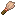
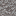

PALEONTOLOGÍA
Fósiles
Excava en los yacimientos prehistóricos, limpia la arena y la grava sospechosas con un pincel y devuelve a la vida a Pokémon de hace millones de años.

Pincel
23 yacimientos- 7 fósiles revivibles

En Diosesmon solo se reviven fósiles de las generaciones 1 a 4
El servidor tiene activos los Pokémon de Kanto, Johto, Hoenn y Sinnoh (#1 a #493). Puedes encontrar cualquier fósil al excavar, pero solo 7 se pueden revivir: los de Teselia, Kalos y Galar no dan Pokémon en el servidor.
Cómo revivir un fósil
Fósiles revivibles 7 disponibles
Pulsa un yacimiento para verlo abajo. ★ = el yacimiento siempre trae ese fósil.
No disponibles en el servidor Gen 5, 6 y 8
Aparecen al excavar, pero sus Pokémon no están activos en Diosesmon, así que no se pueden revivir.
Yacimientos prehistóricos
Estructuras que se generan por el mundo y casi siempre se camuflan con el entorno. Cada una tiene arena o grava sospechosa con un fósil garantizado y más botín.
Ningún yacimiento coincide con el filtro.